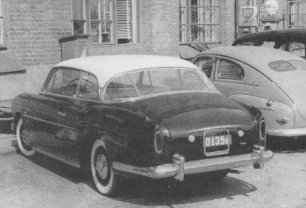
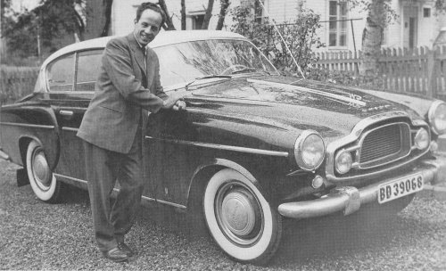

Carrozzeria Vignale · Volvo
Volvo by Vignale
Volvo-cars with special bodywork — a car named Elisabeth
The history of Volvo has very few low-series/sporty vehicles. Yet, some very odd cars carrying the Volvo logo have seen the daylight. One of them was Elisabeth 1 (see image, rearview), parked at Volvo HQ in Gothenburg. But Volvo did not build the car. The man behind the project was the Swedish businessman Goesta Wennberg, who made contact with Michelotti in Paris in 1952. Michelotti was supposed to design the bodywork of a car to be built by Ghia-Aigle, but the drawings came to Vignale, Torino, instead. The work itself took place mainly at Allemano in the same city. The nice coachwork was mounted on a P 445 chassis. Because of the construction of the chassis there was no space for a back seat. This was probably one of the main reasons for Volvo’s lack of interest in serial production of Elisabeth I, which was Wennberg’s original intention with this project.
Volvo Elisabeth I “one-off”

This photo shows the rear end of the car. It was crashed in the early sixties.
Built around 1953-54 on one of many unsold Volvo 445 chassis.

Volvo Elisabeth II — a unique Volvo that has survived
The barber (also named Goesta) Thamsten in Norrbotten is leaning against his unique car, Elisabeth II, Wennberg’s second attempt as an automobile manufacturer. This particular vehicle, in a way resembling the Amazon (P 120), is based on the PV 444. The main issue for Volvo was the backseat spacing which had radically improved compared to Elisabeth I. But after the Volvo crew estimated the manufacturing costs, even this improved version was of no interest. Another reason for Volvo’s lack of interest was simply their own new project, the Volvo P 1900. Elisabeth II was soon in private hands and in the beginning of the ‘90s underwent total restoration by a new owner in western Sweden.
Pictures and text from: Bilar vi minns (Cars we remember). Author: Peter Haventon. ISBN 91-552-2618-3.
Many thanks to Jan Oskarsson for the contents of this page.
He once failed to buy Elisabeth II; if you have any information on the whereabouts of this car, please let him know!